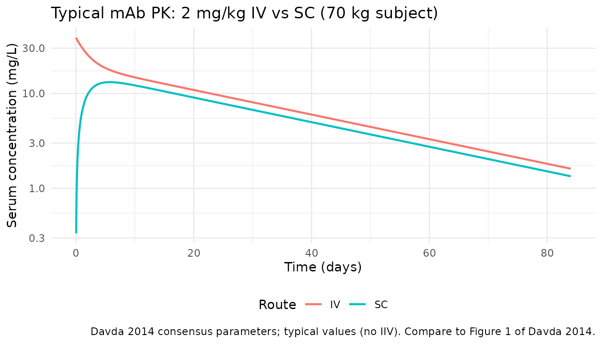
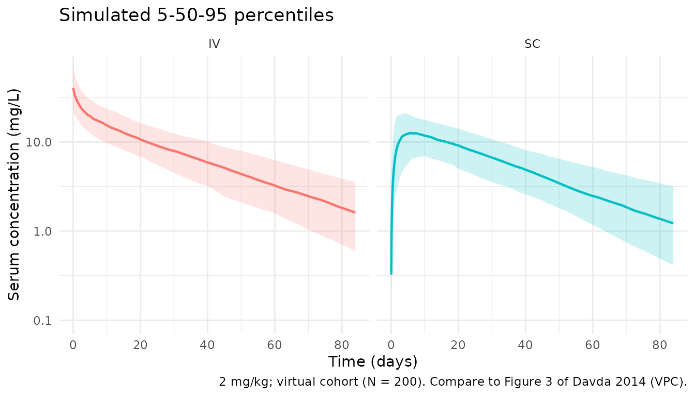

Model and source
- Citation: Davda JP, Dodds MG, Gibbs MA, Wisdom W, Gibbs JP. A model-based meta-analysis of monoclonal antibody pharmacokinetics to guide optimal first-in-human study design. MAbs. 2014;6(4):1094-1102. doi:10.4161/mabs.29095
- Description: Two compartment PK model with linear clearance for average monoclonal antibodies (Davda 2014)
- Article: MAbs 2014;6(4):1094-1102
- Open access: https://pmc.ncbi.nlm.nih.gov/articles/PMC4171012/
Population
Davda 2014 is a model-based meta-analysis of first-in-human (FIH) population PK data from four therapeutic monoclonal antibodies (labeled mAb a, b, c, d). mAb a, b, and c are humanized/human IgG2 antibodies; mAb d is a human IgG1. All four target soluble ligands. The pooled dataset comprised 171 healthy adult volunteers (2,716 serum concentrations: 1,153 from IV dosing and 1,563 from SC dosing). The IV dose range was 1–700 mg and the SC dose range was 2.1–700 mg. Per-study demographic breakdowns (age, sex, weight bands, race) are not tabulated in the published paper; the allometric reference weight is 70 kg. The resulting consensus parameters (Table 3) are intended to guide FIH dose selection for new therapeutic mAbs against soluble targets with similar properties.
The same information is available programmatically via
readModelDb("PK_2cmt_mAb_Davda_2014")$population.
Source trace
Per-parameter origin is recorded as an in-file comment next to each
ini() entry in
inst/modeldb/pharmacokinetics/PK_2cmt_mAb_Davda_2014.R. The
table below collects them for review.
| Equation / parameter | Value | Source location |
|---|---|---|
lfdepot (F1) |
log(0.744) |
Davda 2014 Table 3 |
lka (Ka) |
log(0.282) 1/day |
Davda 2014 Table 3 |
lcl (CL) |
log(0.200) L/day |
Davda 2014 Table 3 |
lvc (V1 / Vc) |
log(3.61) L |
Davda 2014 Table 3 |
lvp (V2 / Vp) |
log(2.75) L |
Davda 2014 Table 3 |
lq (Q) |
log(0.747) L/day |
Davda 2014 Table 3 |
allocl (allometric exponent on CL, Q) |
0.865 |
Davda 2014 Table 3 |
allov (allometric exponent on Vc, Vp) |
0.957 |
Davda 2014 Table 3 |
etalka IIV |
0.416 (= 0.645^2) |
Davda 2014 Table 3 (CV = 64.5%; omega^2 = CV^2) |
etalcl IIV |
0.0987 (= 0.314^2) |
Davda 2014 Table 3 (CV = 31.4%) |
etalvc IIV |
0.116 (= 0.341^2) |
Davda 2014 Table 3 (CV = 34.1%) |
etalvp IIV |
0.0789 (= 0.281^2) |
Davda 2014 Table 3 (CV = 28.1%) |
etalq IIV |
0.699 (= 0.836^2) |
Davda 2014 Table 3 (CV = 83.6%) |
| COV(CL, Vc) | 0.0786 |
Davda 2014 Table 3 |
| COV(Vc, Vp) | 0.0619 |
Davda 2014 Table 3 |
| COV(CL, Vp) | 0.0377 |
Davda 2014 Table 3 |
propSd (residual proportional SD) |
0.144 |
Davda 2014 Table 3 (sigma = 14.4%, sigma^2 = 0.0208) |
| Structure | n/a | Davda 2014 Methods / Table 3: two-compartment linear CL, first-order SC absorption with F1 |
Davda 2014 uses the convention that reported “%CV” is
omega × 100 where omega is the standard
deviation of the log-normally distributed random effect. The diagonal of
OMEGA is therefore simply (CV/100)^2. This is the encoding
used in the ini() block above.
Virtual cohort
Individual observed data are not public. The cohort below is a virtual population of healthy adults with body weight sampled from a truncated normal centered on 70 kg (SD 12 kg, truncated to 45-120 kg), simulated under two regimens:
- IV 2 mg/kg as an instantaneous bolus into the central compartment.
- SC 2 mg/kg into the depot compartment (bioavailability from the model).
Both follow one subject for 84 days to capture the terminal phase of an average mAb (apparent half-life ~20 days).
set.seed(20260418)
n_subj <- 200
wt_draws <- pmin(pmax(rnorm(n_subj, mean = 70, sd = 12), 45), 120)
cohort <- tibble(
id = seq_len(n_subj),
WT = wt_draws
)
obs_times <- c(
seq(0, 1, by = 1 / 24), # first 24 h hourly
seq(1.25, 7, by = 0.25), # first week quarter-day
seq(7.5, 28, by = 0.5), # out to day 28 twice-daily
seq(29, 84, by = 1) # to day 84 daily
)
make_events <- function(cohort, route = c("IV", "SC")) {
route <- match.arg(route)
cmt_dose <- if (route == "IV") "central" else "depot"
doses <- cohort |>
dplyr::mutate(
time = 0,
amt = 2 * WT, # 2 mg/kg
cmt = cmt_dose,
evid = 1L
) |>
dplyr::select(id, time, amt, cmt, evid, WT)
obs <- cohort |>
tidyr::crossing(time = obs_times) |>
dplyr::mutate(amt = 0, cmt = NA_character_, evid = 0L) |>
dplyr::select(id, time, amt, cmt, evid, WT)
dplyr::bind_rows(doses, obs) |>
dplyr::arrange(id, time, dplyr::desc(evid)) |>
dplyr::mutate(treatment = route)
}
events_iv <- make_events(cohort, "IV")
events_sc <- make_events(cohort, "SC")Simulation
mod <- rxode2::rxode2(readModelDb("PK_2cmt_mAb_Davda_2014"))
sim_iv <- rxode2::rxSolve(mod, events = events_iv, keep = c("WT", "treatment"))
#> ℹ omega/sigma items treated as zero: 'etalfdepot'
sim_sc <- rxode2::rxSolve(mod, events = events_sc, keep = c("WT", "treatment"))
#> ℹ omega/sigma items treated as zero: 'etalfdepot'
sim <- dplyr::bind_rows(
as_tibble(sim_iv),
as_tibble(sim_sc)
)For a deterministic typical-subject (70 kg, no between-subject variability) comparison of IV vs SC, zero out random effects:
mod_typical <- mod |> rxode2::zeroRe()
typical_cohort <- tibble(id = 1:2, WT = 70,
treatment = c("IV", "SC"))
ev_typical <- dplyr::bind_rows(
tibble(id = 1, time = 0, amt = 140, cmt = "central", evid = 1L, WT = 70,
treatment = "IV"),
tibble(id = 2, time = 0, amt = 140, cmt = "depot", evid = 1L, WT = 70,
treatment = "SC")
) |>
dplyr::bind_rows(
typical_cohort |>
tidyr::crossing(time = obs_times) |>
dplyr::mutate(amt = 0, cmt = NA_character_, evid = 0L)
) |>
dplyr::arrange(id, time, dplyr::desc(evid))
sim_typical <- rxode2::rxSolve(
mod_typical, events = ev_typical, keep = c("WT", "treatment")
) |> as_tibble()
#> ℹ omega/sigma items treated as zero: 'etalfdepot', 'etalka', 'etalcl', 'etalvc', 'etalvp', 'etalq'
#> Warning: multi-subject simulation without without 'omega'Replicate published figures
Figure 1 / 3 — typical IV vs SC profiles
Davda 2014 Figure 1 shows representative concentration-time profiles for IV and SC administration of the included mAbs, and Figure 3 shows the VPC of the final model. Below is the typical-subject analogue: a 70 kg adult receiving a 2 mg/kg (140 mg) IV or SC dose.
sim_typical |>
dplyr::filter(!is.na(Cc), Cc > 0) |>
ggplot(aes(time, Cc, colour = treatment)) +
geom_line(linewidth = 0.8) +
scale_y_log10() +
labs(x = "Time (days)", y = "Serum concentration (mg/L)",
colour = "Route",
title = "Typical mAb PK: 2 mg/kg IV vs SC (70 kg subject)",
caption = "Davda 2014 consensus parameters; typical values (no IIV). Compare to Figure 1 of Davda 2014.") +
theme_minimal() +
theme(legend.position = "bottom")
VPC-style percentile bands
Virtual cohort percentiles with IIV for the IV and SC regimens. Analogous to Davda 2014 Figure 3 (VPC), though the underlying individuals differ from the paper’s observed dataset.
sim |>
dplyr::filter(!is.na(Cc), Cc > 0) |>
dplyr::group_by(time, treatment) |>
dplyr::summarise(
Q05 = quantile(Cc, 0.05),
Q50 = quantile(Cc, 0.50),
Q95 = quantile(Cc, 0.95),
.groups = "drop"
) |>
ggplot(aes(time, Q50, fill = treatment, colour = treatment)) +
geom_ribbon(aes(ymin = Q05, ymax = Q95), alpha = 0.2, colour = NA) +
geom_line(linewidth = 0.8) +
scale_y_log10() +
facet_wrap(~treatment) +
labs(x = "Time (days)", y = "Serum concentration (mg/L)",
title = "Simulated 5-50-95 percentiles",
caption = "2 mg/kg; virtual cohort (N = 200). Compare to Figure 3 of Davda 2014 (VPC).") +
theme_minimal() +
theme(legend.position = "none")
PKNCA validation
Cmax, Tmax, AUC0-inf, and terminal half-life computed with
PKNCA, stratified by route (the treatment
grouping variable).
sim_nca <- sim |>
dplyr::filter(!is.na(Cc), Cc > 0) |>
dplyr::select(id, time, Cc, treatment)
# IDs must be unique across treatment levels — namespace them
sim_nca <- sim_nca |>
dplyr::mutate(id = paste(treatment, id, sep = "_"))
dose_df <- dplyr::bind_rows(events_iv, events_sc) |>
dplyr::filter(evid == 1) |>
dplyr::mutate(id = paste(treatment, id, sep = "_")) |>
dplyr::select(id, time, amt, treatment)
conc_obj <- PKNCA::PKNCAconc(sim_nca, Cc ~ time | treatment + id)
dose_obj <- PKNCA::PKNCAdose(dose_df, amt ~ time | treatment + id)
intervals <- data.frame(
start = 0,
end = Inf,
cmax = TRUE,
tmax = TRUE,
aucinf.obs = TRUE,
half.life = TRUE
)
nca_res <- PKNCA::pk.nca(
PKNCA::PKNCAdata(conc_obj, dose_obj, intervals = intervals)
)
#> ■■■■ 9% | ETA: 34s
#> ■■■■■■ 17% | ETA: 30s
#> ■■■■■■■■■ 25% | ETA: 27s
#> ■■■■■■■■■■■ 34% | ETA: 24s
#> ■■■■■■■■■■■■■■ 42% | ETA: 21s
#> ■■■■■■■■■■■■■■■■ 50% | ETA: 18s
#> ■■■■■■■■■■■■■■■■■■■■ 62% | ETA: 13s
#> ■■■■■■■■■■■■■■■■■■■■■■■ 73% | ETA: 9s
#> ■■■■■■■■■■■■■■■■■■■■■■■■■■■ 85% | ETA: 5s
#> ■■■■■■■■■■■■■■■■■■■■■■■■■■■■■■ 96% | ETA: 1s
summary(nca_res)
#> start end treatment N cmax tmax half.life
#> 0 Inf IV 200 28.5 [35.4] 0.000 [0.000, 0.000] 24.1 [6.44]
#> 0 Inf SC 200 17.7 [33.0] 6.25 [1.25, 27.0] 25.0 [6.66]
#> aucinf.obs
#> 506 [34.4]
#> NC
#>
#> Caption: cmax, aucinf.obs: geometric mean and geometric coefficient of variation; tmax: median and range; half.life: arithmetic mean and standard deviation; N: number of subjectsComparison against published NCA
Davda 2014 is a population-PK meta-analysis and does not report a standalone NCA table for Cmax / Tmax / AUC by route. Instead, the paper characterises the mAb class via the population parameter estimates in Table 3. The simulated NCA output above is provided so that readers can inspect the emergent exposure properties of the consensus model. A typical-subject sanity check at 70 kg, 2 mg/kg IV / SC:
typical_nca_conc <- sim_typical |>
dplyr::filter(!is.na(Cc), Cc > 0) |>
dplyr::mutate(id = paste(treatment, id, sep = "_")) |>
dplyr::select(id, time, Cc, treatment)
typical_nca_dose <- tibble(
id = c("IV_1", "SC_2"),
time = 0,
amt = 140,
treatment = c("IV", "SC")
)
nca_typical <- PKNCA::pk.nca(PKNCA::PKNCAdata(
PKNCA::PKNCAconc(typical_nca_conc, Cc ~ time | treatment + id),
PKNCA::PKNCAdose(typical_nca_dose, amt ~ time | treatment + id),
intervals = data.frame(
start = 0, end = Inf,
cmax = TRUE, tmax = TRUE, aucinf.obs = TRUE, half.life = TRUE
)
))
typical_tbl <- as.data.frame(nca_typical$result) |>
dplyr::filter(PPTESTCD %in% c("cmax", "tmax", "aucinf.obs", "half.life")) |>
dplyr::select(treatment, PPTESTCD, PPORRES) |>
tidyr::pivot_wider(names_from = PPTESTCD, values_from = PPORRES)
knitr::kable(
typical_tbl,
digits = 3,
caption = paste(
"Typical-subject (70 kg, 2 mg/kg) NCA for the Davda 2014 consensus model.",
"The paper does not publish NCA for comparison; values shown for reader inspection."
)
)| treatment | cmax | tmax | half.life | aucinf.obs |
|---|---|---|---|---|
| IV | 28.853 | 0.00 | 23.114 | 520.637 |
| SC | 17.694 | 5.75 | 23.289 | NA |
Qualitative expectations from the Davda 2014 consensus parameters at 70 kg, 2 mg/kg:
- IV Cmax at t=0 ~
dose / Vc=140 / 3.61≈ 39 mg/L. - SC Cmax is lower than IV and delayed by the slow first-order SC absorption (Ka = 0.282/day → absorption half-life ~2.5 days).
- Apparent terminal half-life for an average mAb ~
0.693 × (Vc + Vp) / CL=0.693 × 6.36 / 0.2≈ 22 days, consistent with class expectations (IgG catabolic half-life 2-4 weeks). - SC AUC0-inf = IV AUC0-inf × F1 = IV AUC0-inf × 0.744.
Assumptions and deviations
- Davda 2014 does not tabulate age, sex, or race distributions for the
underlying 171 healthy volunteers. The virtual cohort uses body weight
only (truncated normal around 70 kg). These population-level
demographics are flagged as
NAinpopulationmetadata rather than invented. - The SC dose is administered into the depot compartment; bioavailability applies there (F1 = 0.744). The IV dose is placed directly in the central compartment (F = 1). This matches the model structure in Davda 2014.
- Simulation window (84 days) is long enough to characterise the terminal phase of an average mAb but is longer than some of the FIH follow-up windows in the original studies.
- The PKNCA comparison table is a qualitative check only: the paper does not publish NCA parameters, so no side-by-side published vs simulated table is possible. Values were not tuned to any target.
- IIV is encoded with
omega^2 = (CV/100)^2on the diagonal, matching the paper’s convention that reported “%CV” isomega × 100(SD of the log-normal). Off-diagonal covariances are used as reported in Table 3.